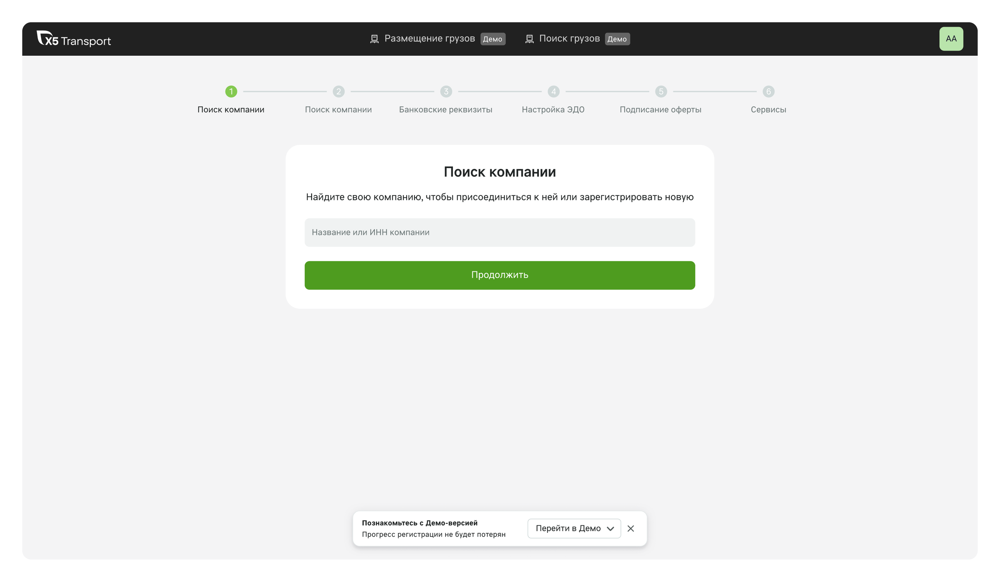
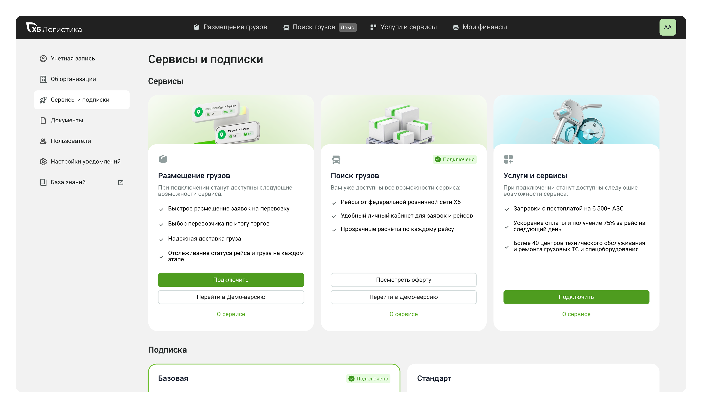
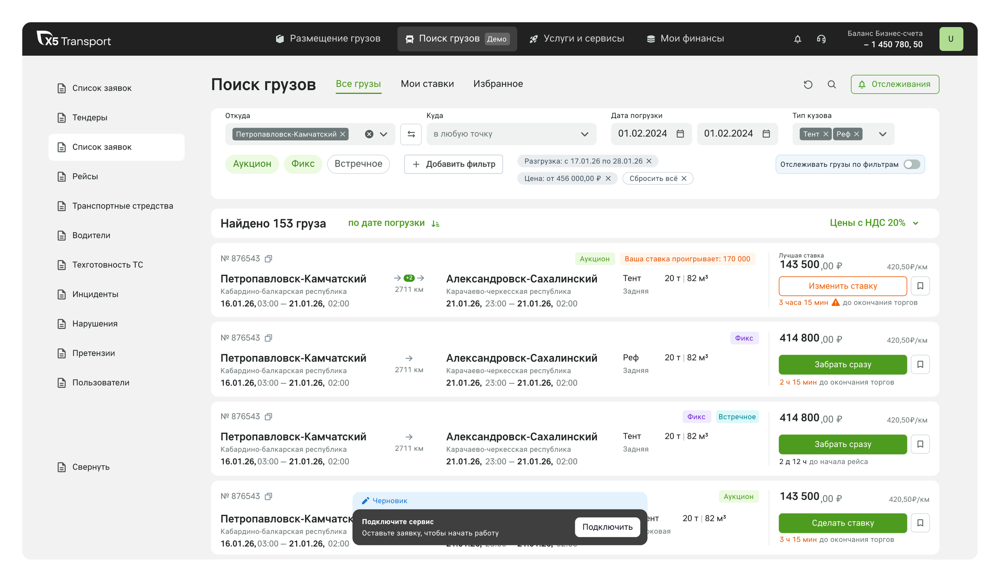
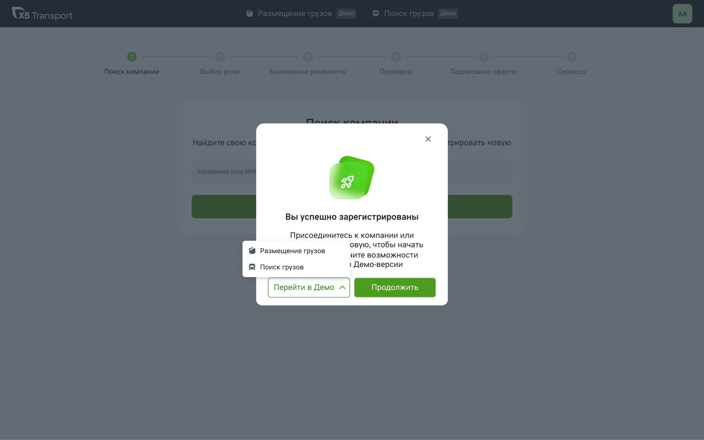
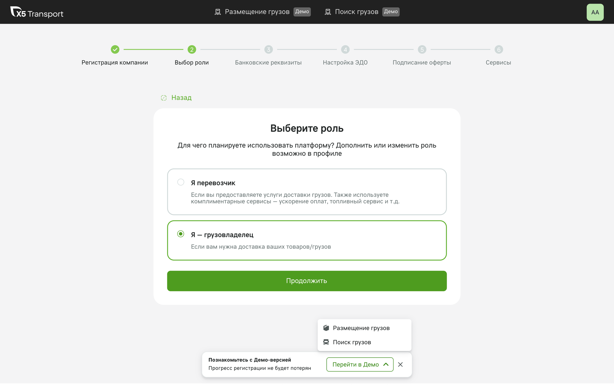
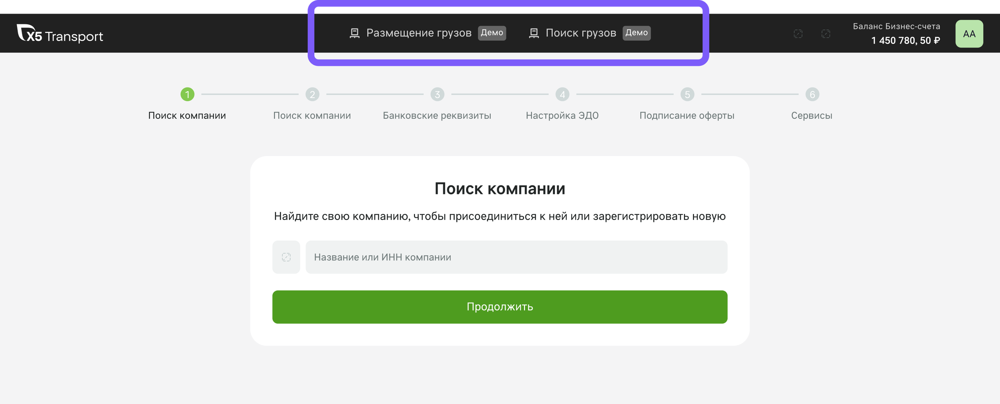
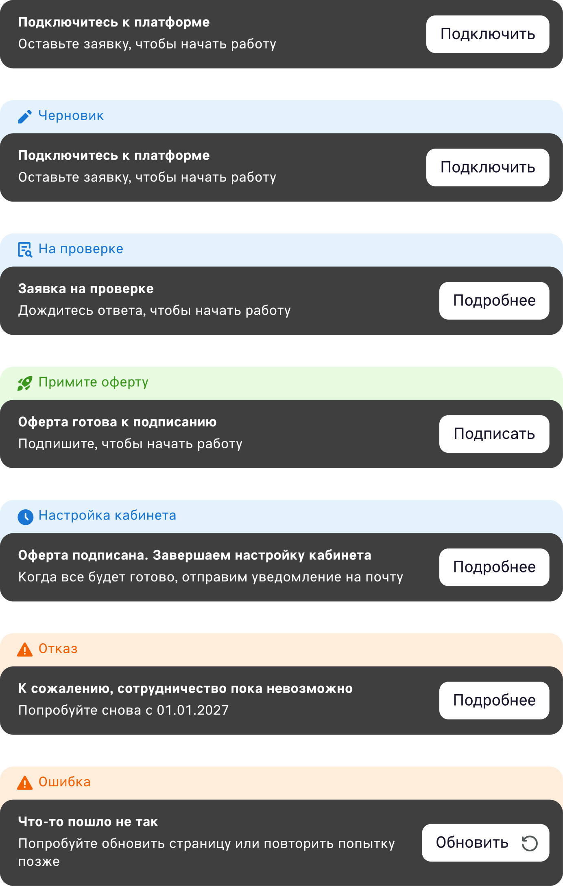
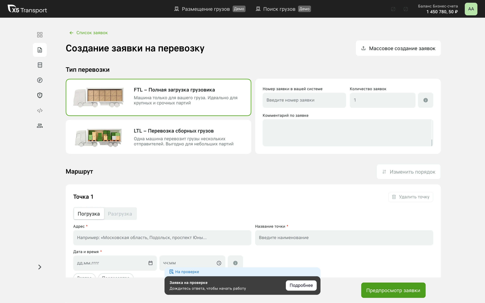
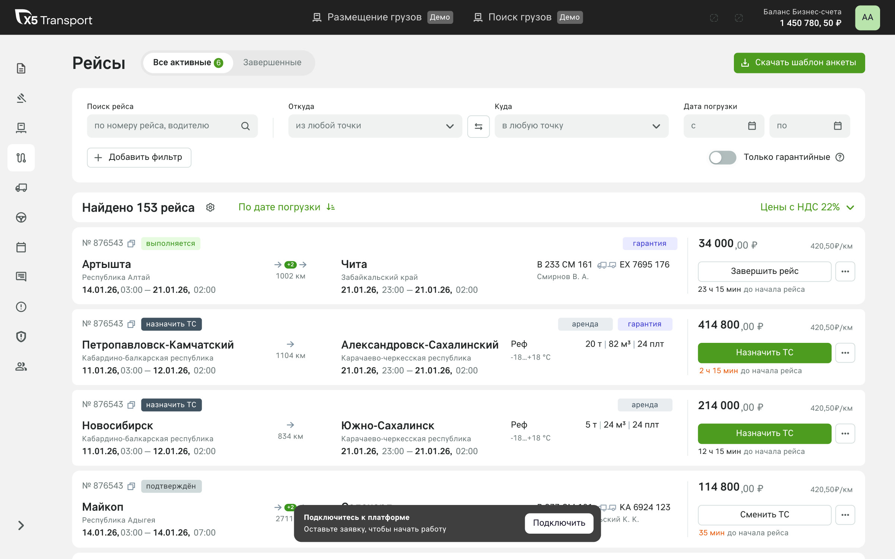
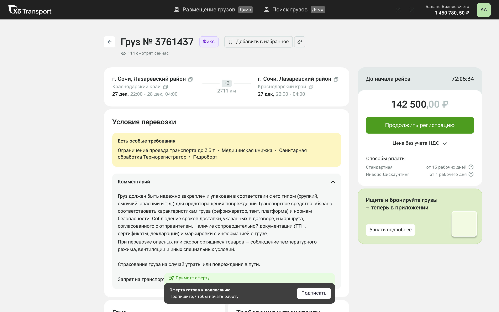

Кейс 02
Демо-версия платформы
Спроектировала демо-версию, доступную ещё до подключения, и выстроила единый подход к переходу в неё.
| Период | 1 полугодие 2026 |
|---|---|
| Продукт | Подключение и активация клиентов |
| Результаты | Расскажу при встрече |

Контекст
Перед подключением компания проходит проверку.
Всё это время доступа к продукту нет.
Проблема
До подписания оферты доходит лишь часть начавших подключение.
Основные потери — на проверке: пользователь не видит продукт и не возвращается, даже получив письмо.
Гипотеза
Если ещё до подключения дать демо-версию продукта, пользователь поймёт ценность и вернётся завершить регистрацию.
Цель и метрика
Вернуть пользователей к подписанию оферты.
Метрика: конверсия в подписание оферты до и после релиза.
Точки входа
Демо доступно там, где пользователь упирается в ограничение: и в процессе регистрации, и внутри самой платформы — в разделах, которые у компании ещё не подключены.
№1
Процесс регистрации
Демо-версия доступна ещё до подписания оферты.

№2
Сервисы и подписки
Раздел, который у компании ещё не подключён: из карточки сервиса можно перейти в демо.

№3
Поиск грузов
Раздел, который у компании ещё не подключён, открывается в демо-режиме.

Решения
Опиралась на паттерны Asana (модалка с триалом) и Яндекс Доставки (сквозной демо-режим).
№1
Модалка при входе во флоу подключения
Сразу после регистрации предлагаем перейти в демо нужного раздела — или продолжить подключение.

№2
Сквозная плашка демо-версии
На каждом шаге регистрации — лёгкая плашка «Познакомьтесь с демо-версией». Прогресс регистрации не теряется.

№3
Теги «Демо» на разделах
В навигации видно, какие разделы можно посмотреть в демо-режиме.

№4
Статусы подключения
Пользователь всегда видит, на каком этапе его заявка и что сделать дальше.

№5
Статус живёт внутри продукта
Например, на странице создания заявки — с кнопкой следующего действия.

Выход из демо
Все целевые действия ведут обратно в регистрацию, а внизу экрана — акцентная плашка для возврата к подключению.

Рейсы

Страница груза
Риск
Не уведёт ли демо пользователей из регистрации?
Плашка визуально лёгкая — белая, с тенью — и не конкурирует с основным действием. Её можно закрыть крестиком.
Путь назад к регистрации есть в целевых действиях и в акцентной чёрной плашке с кнопкой, ведущей к подключению.
Результаты
Стартовую конверсию в подписание оферты и динамику после релиза покажу и разберу на встрече.
Следующий кейс
Редизайн формы создания заявки